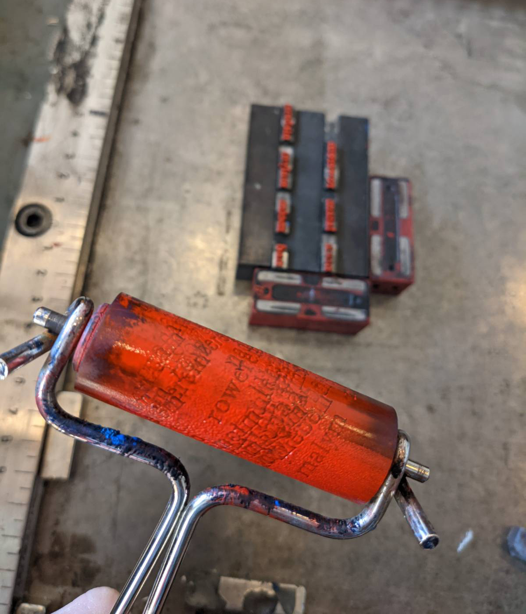
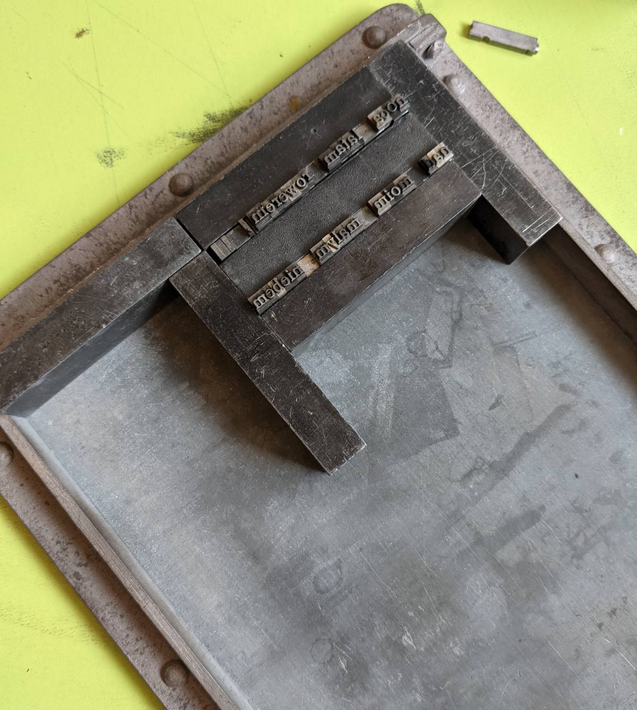
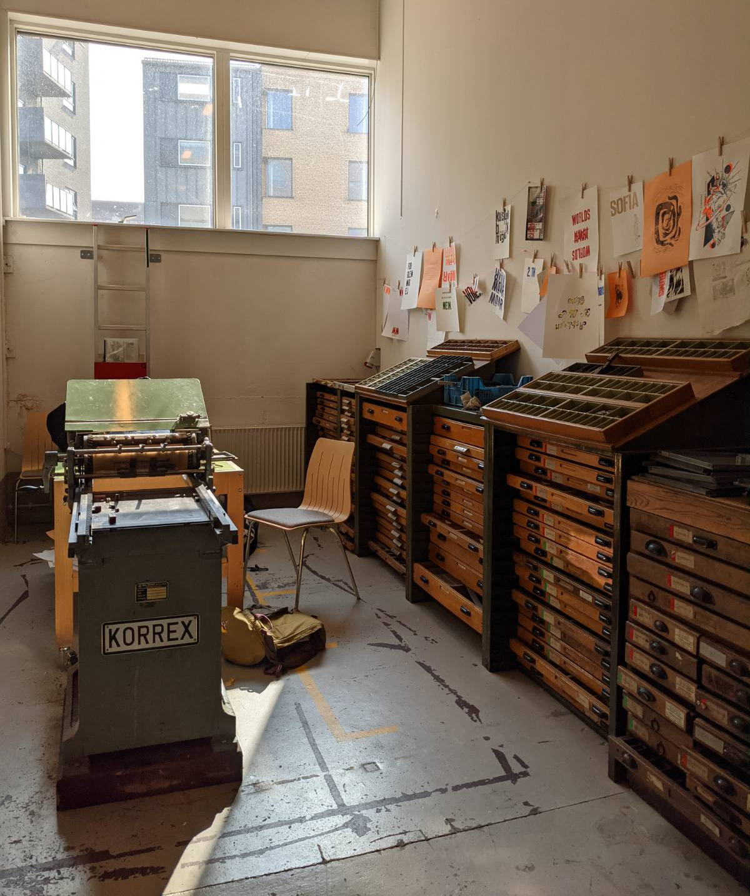
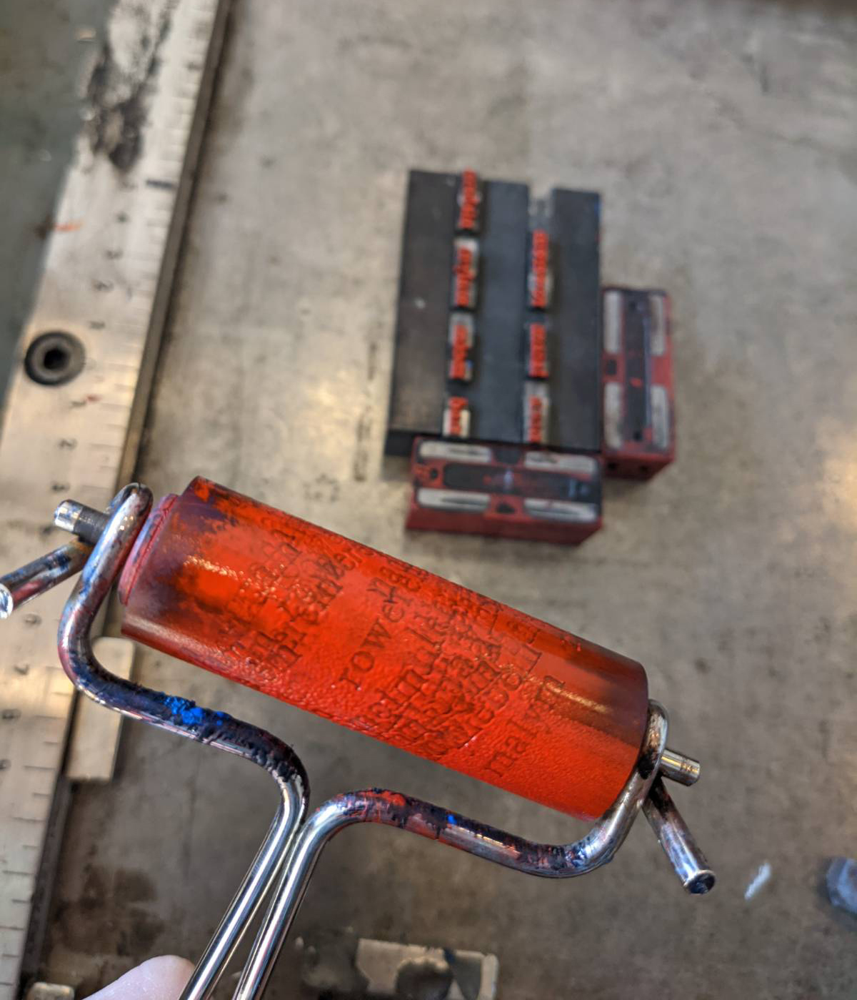
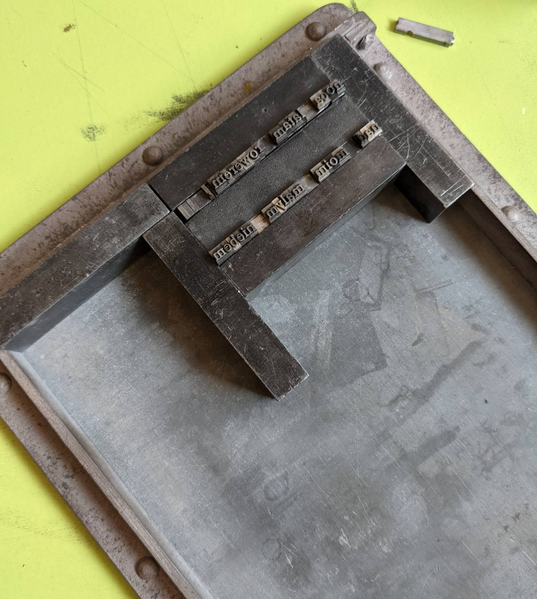
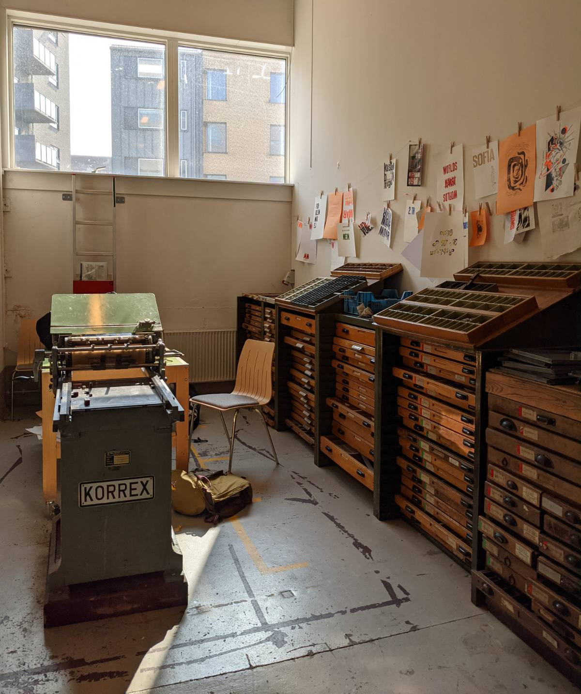

Joy of Cycling
Poster made for tour de france 2022. Made during my erasmus in Denmark, Kolding, through which the tour was passing.
The design of the poster is quite personal to me. I love to ride a bike, and I enjoy it the most when it gets dark, there are fewer people on the streets and I cycle through the city with no destination. It feels almost like flying among the stars.
The typography on the poster was made using letterpress workshop.
Paragraph 2